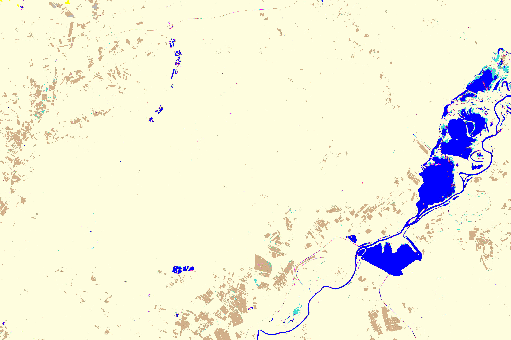
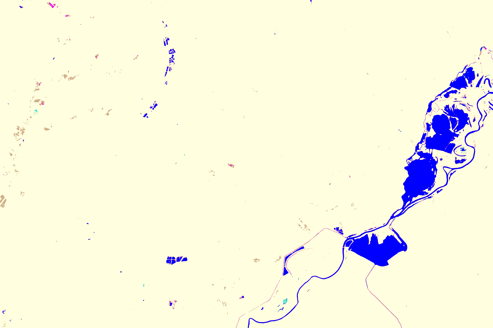
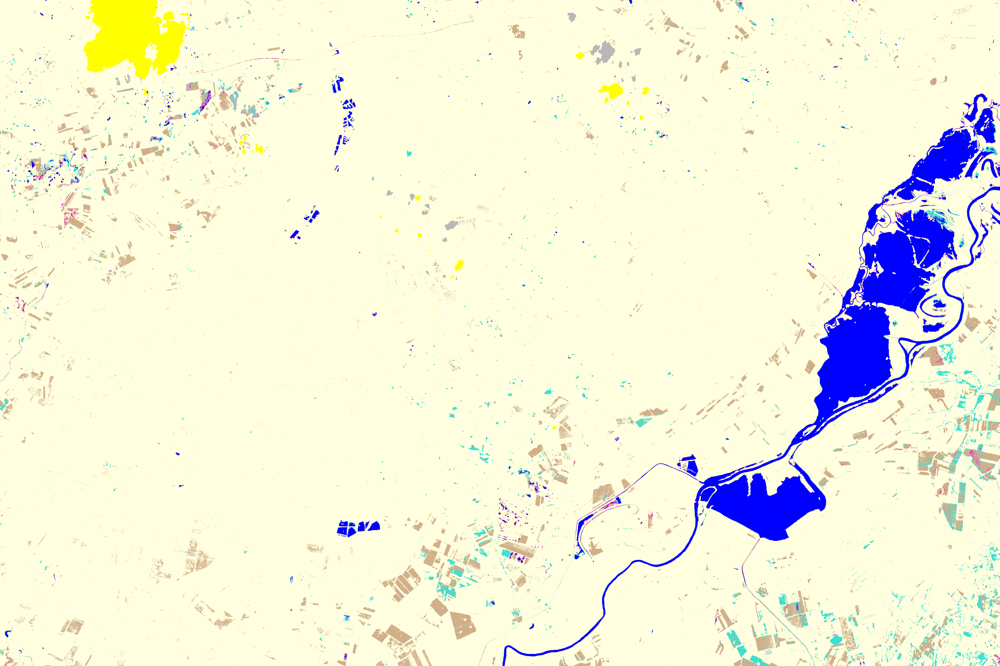

Swipe the bar to explore data over time. Move left for earlier data, right for later data.

Landform 1: Data collected on January 2023

Landform 2: Data collected on February 2023

Landform 3: Data collected on March 2023
Accumulated Results: Combined data from all months
Earlier
Later
Show Accumulated Results